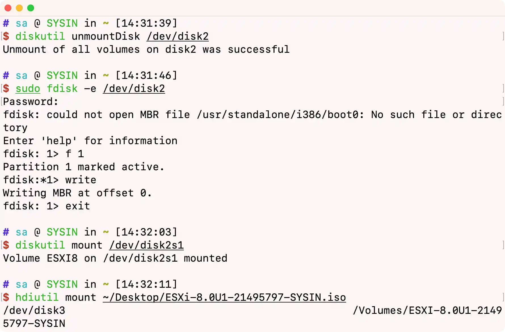
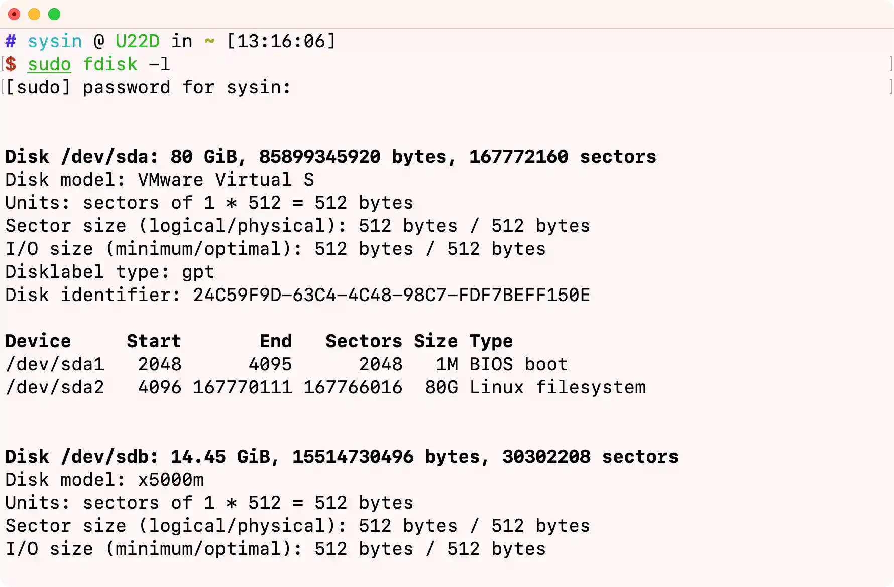
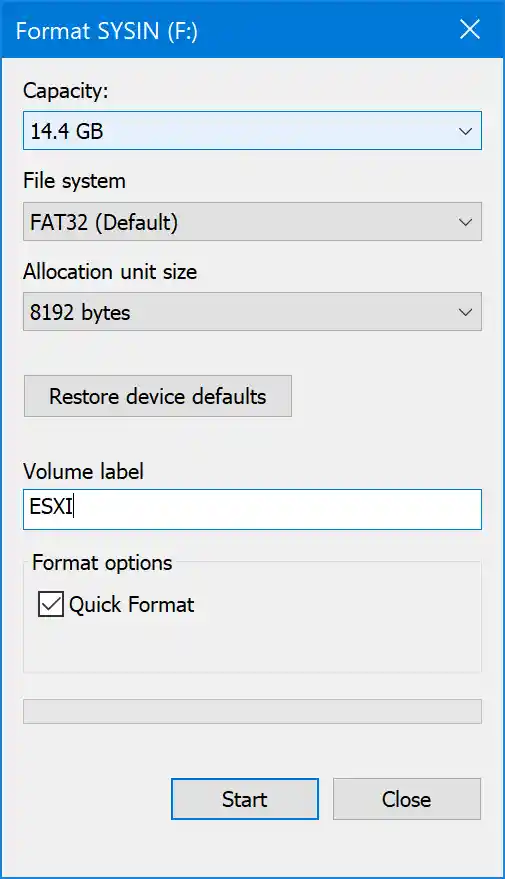
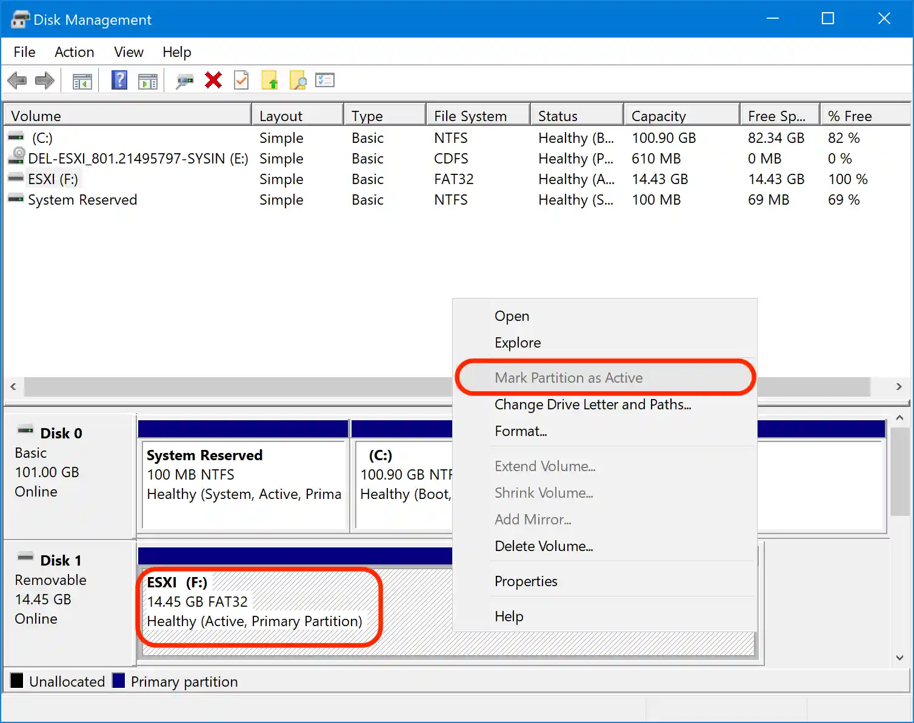
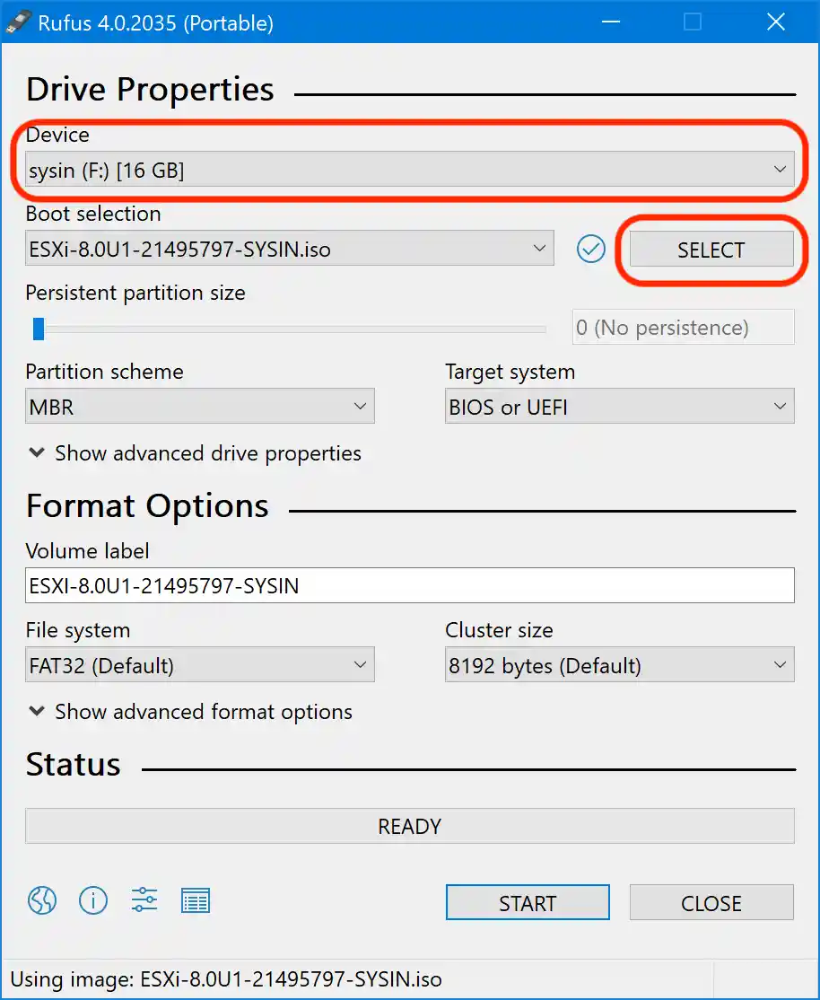
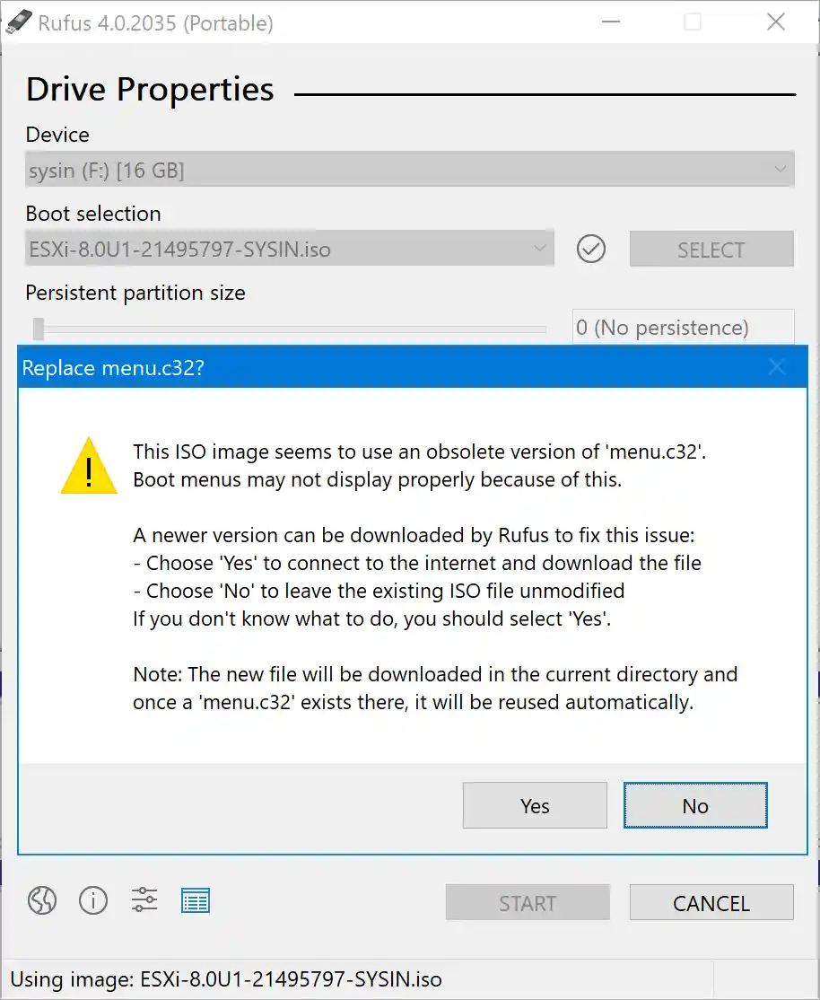
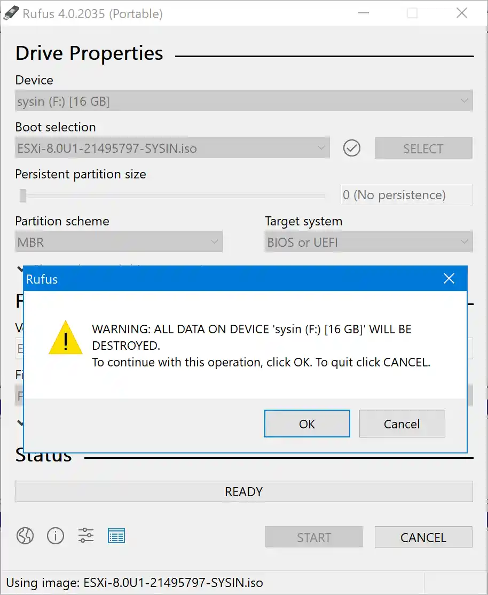
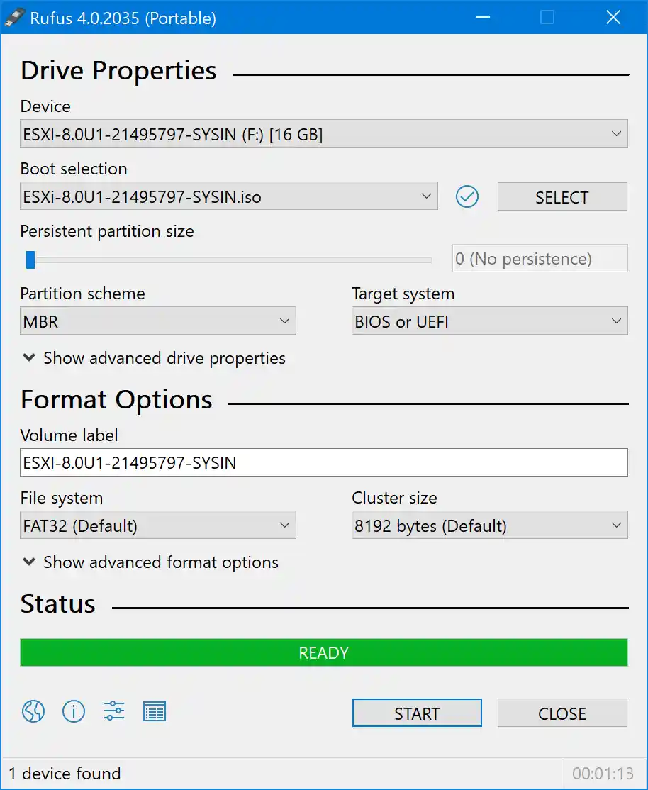

请访问原文链接：如何创建可引导的 ESXi USB 安装介质 (macOS, Linux, Windows) 查看最新版。原创作品，转载请保留出处。
生活本不易，原创更不易。还请友商高抬贵手，尊重彼此的劳动成果。谢谢🙏
作者主页：sysin.org
以下 USB 存储设备可以是 U 盘/SD 卡，当然 USB SSD 更佳。
macOS
macOS 使用终端自带命令即可完成操作。
查看 USB 存储设备的 MountPoint 或者路径。
diskutil list显示结果（通常只有一块内置磁盘，外接第一块 USB 存储设备为 /dev/disk2）：
1
2
3
4/dev/disk0 (internal, physical) #内置物理磁盘
......
......
/dev/disk2 (external, physical) #本例中的外置磁盘，以下命令都要使用格式化 USB 存储设备。
命令格式：
diskutil eraseDisk format name [APM[Format]|MBR[Format]|GPT[Format]] MountPoint|DiskIdentifier|DeviceNode本例：
diskutil eraseDisk MS-DOS "ESXI" MBR /dev/disk2注意：name “ESXI” 需全部为大写字母，或包含数字。
此步骤可以使用 “磁盘工具” 图形界面操作，不再赘述。
设置 USB 存储设备分区为 active（活动分区）。
卸载分区：
diskutil unmountDisk /dev/disk2使用 fdisk：
1
2
3
4
5
6
7
8sudo fdisk -e /dev/disk2
fdisk: could not open MBR file /usr/standalone/i386/boot0: No such file or directory
Enter 'help' for information
fdisk: 1> f 1 #设置活动分区：flag <partition number>
Partition 1 marked active.
fdisk:*1> write #保存
Writing MBR at offset 0.
fdisk: 1> exit #退出挂载分区：
1
2
3diskutil mount /dev/disk2s1
输出如下：
Volume ESXI on /dev/disk2s1 mounted示例输出如下：

写入 ISO 文件到 USB 存储设备。
挂载 ESXi iso 文件：
1
2hdiutil mount ~/Desktop/ESXi-8.0U1-21495797-SYSIN.iso
或者在 Finder 中直接双击 iso 文件自动挂载复制文件：
1
2cp -R /Volumes/ESXI-8.0U1-21495797-SYSIN/* /Volumes/ESXI/
或者直接在 Finder 中复制文件修改 USB 存储设备中的 ISOLINUX.CFG。
此为可选步骤，可以忽略。
将
APPEND -c boot.cfg修改为APPEND -c boot.cfg -p 1，另外部分 VMware 专家表示将 ISOLINUX.CFG 文件重命名为 SYSLINUX.CFG，实测 ESXi 7.0 和 ESXi 8.0 都无需上述设置。如果您的硬件无法启动，可以尝试上述配置 (sysin)。1
2
3
4
5
6cd /Volumes/ESXI/
cat ISOLINUX.CFG | grep APPEND
APPEND -c boot.cfg
sed -i "" 's/APPEND -c boot.cfg/APPEND -c boot.cfg -p 1/g' ISOLINUX.CFG
cat ISOLINUX.CFG | grep APPEND
APPEND -c boot.cfg -p 1推出 USB 存储设备。
hdiutil detach /dev/disk2
Linux
Linux 与 macOS 的操作是类似的，只是具体命令或参数有所差异。
root 或者具有 sudo (root) 权限用户登录。
识别 USB 存储的设备路径，本例中为 /dev/sdb。
插入 USB 存储设备，通过如下命令查看：
1
2
3sudo dmesg | grep removable
输出如下：
[ 5.240965] sd 33:0:0:0: [sdb] Attached SCSI removable disk或者通过 fdisk 命令查看：
1
sudo fdisk -l
示例输出如下：

格式化 USB 存储设备并设置为活动分区（active）。
使用 fdisk 创建一个分区。 这将调出交互式工具。
sudo fdisk /dev/sdb按 d 删除现有分区
按 n 表示新分区，然后按 p 表示主分区
按 ENTER 3 次，以使用默认设置
按 t 切换文件系统类型
按 c 将文件系统类型设置为 FAT32
按 a 激活分区
按 w 将更改写入磁盘现在格式化 USB 存储设备。
/sbin/mkfs.vfat -F 32 -n ESXI /dev/sdb1复制文件。
1
2
3
4
5
6
7
8
9
10
11
12
13
14
15
16
17
18
19
20
21
22创建 mountpoint 并挂载 USB 存储设备
mkdir /usb
mount /dev/sdb1 /usb
创建 mountpoint 并挂载 ESXi iso 文件
mkdir /esxi
mount -o loop /home/sysin/ESXi-8.0U1-21495797-SYSIN.iso /esxi
复制 iso 映像中的文件到 USB 存储设备
cp -r /esxi/* /usb/
经测此步骤可以忽略 (sysin)
编辑 USB 存储设备中的 isolinux.cfg 文件，将 APPEND -c boot.cfg 修改为 APPEND -c boot.cfg -p 1
sed -i 's/APPEND -c boot.cfg/APPEND -c boot.cfg -p 1/g' /usb/isolinux.cfg
卸载 mountpoint
umount /usb
umount /esxi
删除 mountpoint 文件夹
rm -r /usb
rm -r /esxi弹出 USB 驱动器。
1
sudo eject /dev/sdb
Windows
Windows 使用内置工具操作如下，实际上与 macOS、Linux 同理：
格式化 USB 存储设备为 FAT32 格式
在磁盘管理或者资源管理器中都可以格式化，如图：

将 USB 存储设备分区设置活动分区（Active）：
打开 “磁盘管理” 可以看到上述格式化操作已将 USB 存储设备分区设置为 Active，如果未显示 Active，点击该分区右键 “将分区标记为活动分区” 即可 (sysin)。

复制文件
双击挂载 ESXi iso 文件，将其根目录下的所有文件和文件夹复制到 USB 存储设备的根目录下即可。
Windows 使用第三方工具，如 Rufus、unetbootin，操作步骤如下。
选择 USB 存储设备和 iso 文件，点击 “START”

按 No 即可

按 OK 确认

写入成功

本站定制映像：
- VMware ESXi 8.0U3k macOS Unlocker & OEM BIOS 2.7 标准版和厂商定制版
- VMware ESXi 8.0U3k macOS Unlocker & OEM BIOS 2.7 集成驱动版

文章用于推荐和分享优秀的软件产品及其相关技术，所有软件提供免费版或试用版。内容若侵犯了您的版权，请联系作者删除。如果您喜欢这篇文章，或者觉得它对您有所帮助，亦或发现有不当之处；欢迎发表评论，也欢迎分享这个网站，或者赞赏一下，谢谢！提示：捐赠或赞赏属于自愿赠予行为，提交后即表示您对作者的支持与认可。为避免误操作，请在确认前仔细检查金额，支付完成后将无法撤销或退还。
 支付宝赞赏
支付宝赞赏  微信赞赏
微信赞赏赞赏一下
敬请注册！点击 “登录” - “用户注册”（已知不支持 21.cn/189.cn 邮箱）。 请勿使用联合登录（已关闭）。